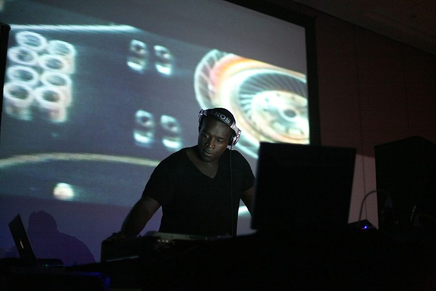

Kevin Saunderson [Audio]: Still traveling strong



STREAMING AUDIO INTERVIEW
The members who made up the ‘First Wave’ of Detroit techno are about as revered, respected and influential as anybody else in the history of dance music, and along with his contemporaries Derrick May and Juan Atkins, techno mainstay Kevin Saunderson is as successful as ever all these years after they got the movement going back in the early 80s. And there’s no better indication of how in demand he is, than the fact that he’s about to touch down in Australia again.
He’s been back in the studio this year, and interestingly he’s been lending his learned talents to remixing tracks from some of the young guns in the dance scene including Claude Von Stroke and Simian Mobile Disco. ITM talks to Kevin and discovers that with so much production work coming up and with gigs lined up all over the world, he’s still traveling strong – both literally and metaphorically.
Catch Kevin Saunderson at the Stereosonic Festival this Saturday!